Content here!
(R) DOES NOT APPLY
clicky!
A Mini-Mag For Digital Fantasts
Toolflash!
Are assets tools?
Yea duh
Stupid
Itch Debutants
Assets and game jams as game-maker makers... ? Yeah
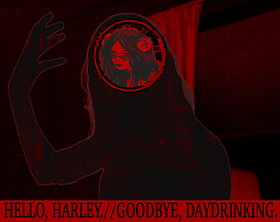
Title
content here
< 3
Poppy
| Website: | www.lexie.land |
| E-mail: | alexandria@lexie.land |
| Bluesky: | @lexie.land |
| Mastodon: | @shoebby@mastodon.social |
Itch Debutants
How assets make new & highlighting a few standouts
Content here!
Title
Subtitle
Content here!
Tools to make assets is one thing, but especially in game development the already-existing library of assets is staggering. Whether it be textures or sound effects, look deep enough and you'll excavate the fragments of games ages past inside of current-day releases.
The asset reuse in Fromsoft games is widely noted and worth learning from. Building something straight from the aether is close to impossible, so why not pick up a texture or two?
This Toolflash will be dedicated to the hubs where assets congregate, ready to be remixed and repurposed.
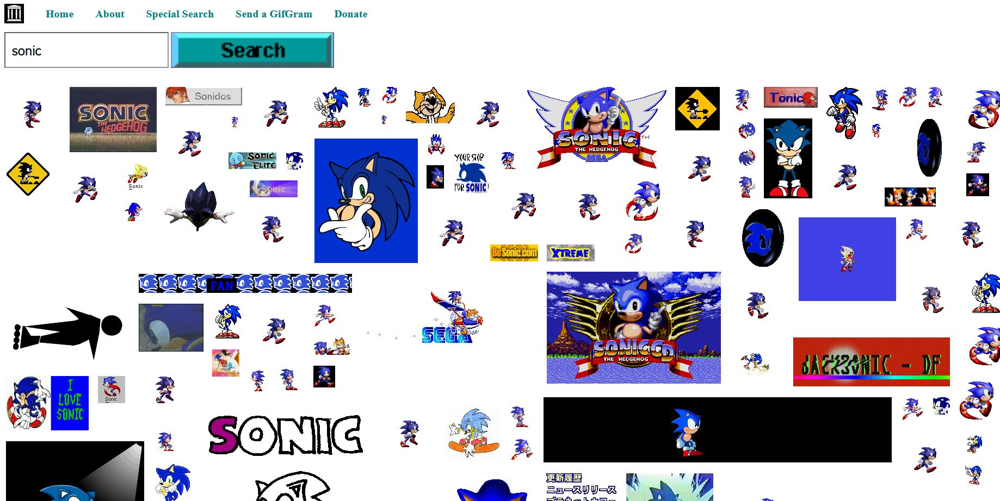
GifCities
An enormous archive of gifs collected through the wayback machine, made accessible and browsable with this search engine! Some real gems here like weird banner ads and blingees.
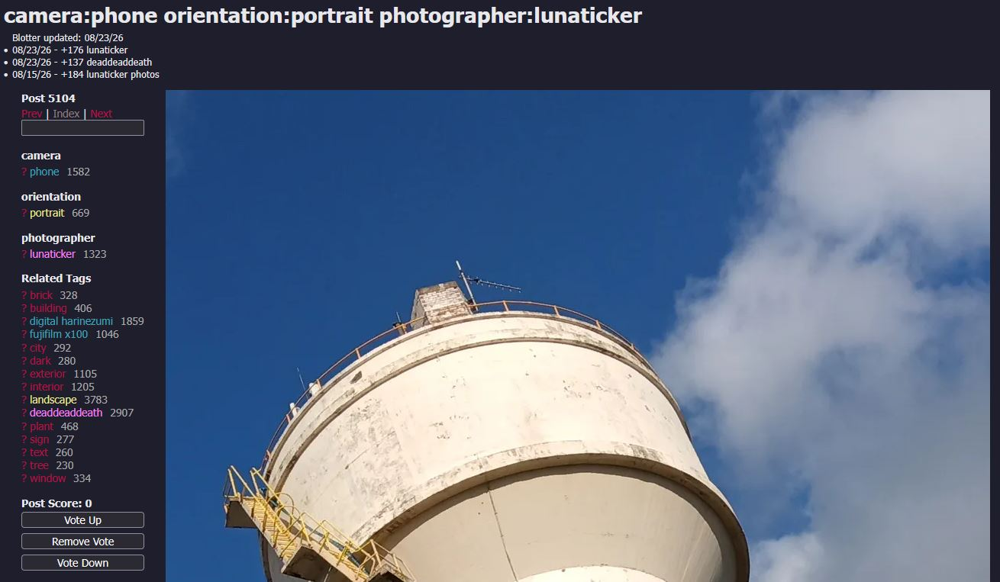
Hurt Nullified Catgirls For Fun!
Born from the wonderful world of toxic yuri visual novels, this booru hosts a large collection of pictures taken by people, free for use in games and whatnot.
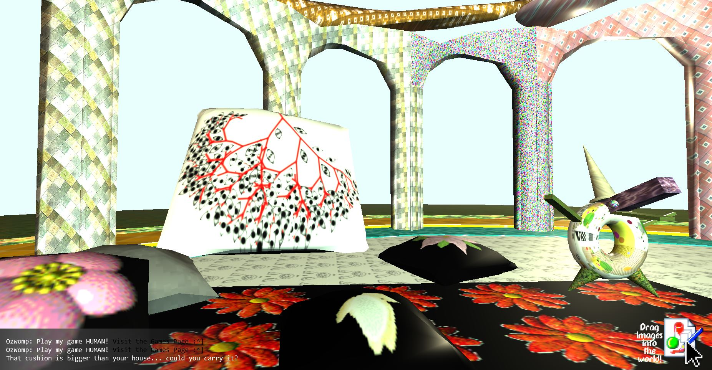
TextureTown
A collection of oddball textures, real fun to sift through for dressing up your environments! Also includes a playroom where you can drag and drop textures in a 3D environment to test them out!
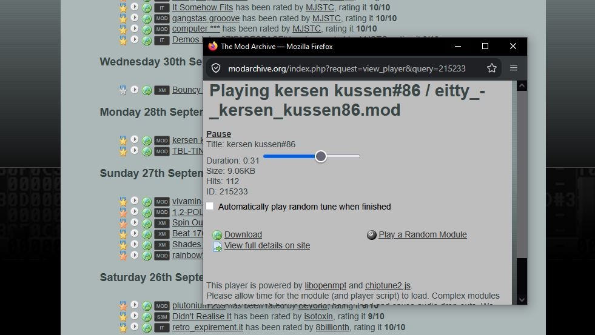
The Mod Archive
A huge collection of music modules, which are basically a kind of music file comparable to MIDI, but with the instruments saved inside of the file. They're often made to loop, and licenses vary so be sure to keep them in mind if you wind up using any!
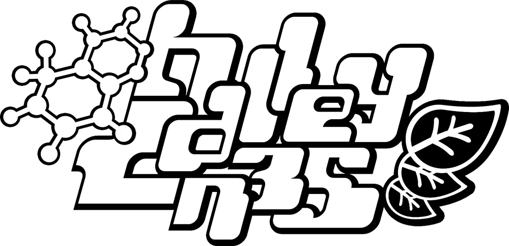
HALLEY LABS RESOURCE CENTER
Treasure trove of samples, stems, loops, and plugins. Helped me a lot to get started with music production, let alone figure out what I even wanted to make. Be sure to check out its music as well, it bops crazy style.
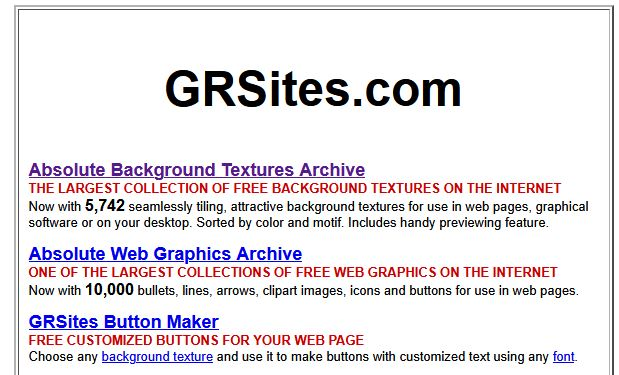
GRSites Textures
GRSites was a legendary source of textures, fonts, and sound effects, but they sadly shut down sometime in 2021. Through the internet archive a good portion of the textures have survived though, and I enjoy browsing through them in their low-res glory.
Title
Subtitle
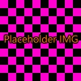
Intro
Section Title
Section content
Section Title
Section content
Section Title
Section content
Plano
Collaging... The webby way!
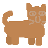
I was 11 years old when I found Yume Nikki, a game about dreaming that would wind up shaping me as a game maker and game player. It was the first videogame where the only expectation of me was to explore, I barely knew about the different 'effects' you could collect.
Other exploration games are quick to give you goals, like in Minecraft; fell trees, build a crafting table, make tools, mine ore, and before you know it you're asked to go to hell and kill a dragon. It's exciting, it draws you in, and it's game-y. Yume Nikki, and games like it, instead seem more interested in a less-active form of exploration; take in the sights, interact with the few things that let you, more akin to a museum than a box of Lego's.
I would even dare to say it's anticolonial game design, where by being asked or forced to respect a (game) environment for what it is, it turns our activity into something more thoughtful and observant. Let's take a look at a game engine for making games like these.
Like a Pancake
Flatgames are a loosely defined genre of games where you walk and hear and see from a top-down 2D perspective. Plano is for making these kinds of games and nothing else. I personally adore this all-out commitment of a game engine, be it for visual novels like Renpy or walk-and-talk games like Bitsy. It adds this interesting sort of sheen to a game made in these tools, where the engine is allowed to be a participating presence post-compile.
Kate Bagenzo also created Windowpane, a tool for making web-based hyperlink art, for example visual novels!
It's fun to use and very open-ended, and a good way to learn the basics of HTML and CSS.
In Plano games this can be felt through not only an iconic loading screen, but the way a given character moves, the collage-y use of images as background elements, and the supportive role of text that can be written and placed in a similarly collage-y manner; this contrasts generalistic game engines, who make themselves small after their bootup splash.
So what do these flatgames do? Turns out that even with limitations, and perhaps thanks to them, they prove versatile. Kate Bagenzo, the developer of the tool, has written a manifesto (Sticky Fingers) and recreated a memory (the old view fro the bedroom window) inside of it.
A Plano-powered game that jumped out to me was At least there's lilacs by Sraëka Lillian. As a little blue alligator type thing you look for bits and pieces of poem. The text is fractured and torn apart, spread out over a large area to make the reader meander through and look for the prose. It can take some time, but at least there's lilacs!
A Game Is A Place
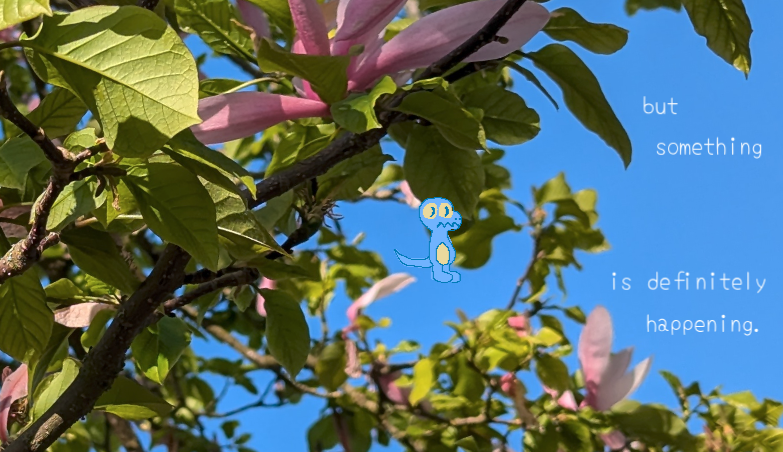
Let's circle back on the anticolonial thing, because I think it's worth writing about in relation to Plano and other flat(-ish)games. Where in most exploration games you externalise your exploration in some way (usually by changing or affecting your direct environment) these games instead frame the environment as-is. There are no factories to build, no enemies to wipe out, no resources to harvest; you are an observer and a guest, felt through the very mechanics granted to you.
This very granting of mechanics is what frames your game: if you give players a gun they're going to try and shoot everything. Just like how in Yume Nikki, the moment players find the knife effect they start stabbing anything and everything just to see what it does.
Plano seems to understand this well, and know that in order to have people engage with a collage game the focus needs to be on the background rather than the character. While moving around offers a compelling sense of spatiality, the lack of anything else helps draw focus to what would normally be seen as the background. You walk around not to reach a specific destination either, but to get to see more of the background.
This kind of game is not without its considerable number of detractors, however. Often considered to "not count" as a game due to the lack of interactivity, the choice to omit is not counted as a design decision but laziness. A favourite of mine is when a lack of jumping in a first-person game is counted as a pure slight, for example in "walking simulators". In The Stanley Parable this is even made into a lengthy gag ending with the jump circle.
I want to argue that game engine options like Plano help develop this perspective further, that games don't have to be defined by the features they lack but rather the features they do have and the reasons why they have them. I think it's good practice to assume intention when engaging with art, more controversially that it's a base-line requirement.
At the end of the day Plano works from a place of 'smallness', where games don't have to be hours-long epics or dopamine-sick retinatainment. Games can be slow, small, and simple. In an age where everything is technically possible, choosing to do little is a radical act.
Wareware
The walkie-talkie builder of my dreams...
I have developed a huge and aggressive love for what I like to call 'walkie-talkies'. These are interactive experiences, typically videogames, where the gameplay primarily consists of walking around and talking to people. Smile For Me always comes up as a great example as it further exemplifies the core tenets of a solid walkie-talkie. It should have a cast of compelling and loveable characters, a solid atmosphere, and an environment worth exploring. Frog Detective also checks these boxes for instance, as does Chants of Sennaar, and I've always wanted to make one of my own.
It's daunting though, what makes the walkie-talkie special is vibes at the end of the day, the vibes have to be -immaculate-. Without vibes you have no desire to walk, or talk, and you'd rather boot up anything else. Sewer Rave is 100% vibes. It does not matter that every wall ceiling and floor is the same brick texture, or that every rat is the same recoloured sprite. The music is bumping, there's a huge snake, and every rat has something funny, endearing, or charming to say. We need more Sewer Rave-type games, and that's why I'm so glad Wareware is in development.
The Walkie
Moving in Wareware feels like walking with toddler legs in the best way possible. It feels clumsy, silly, slippery, especially when there are any slopes involved. It's like fighting against gravity or being sent tumbling down by it. It all feels so incredibly right, not to mention the adorable walking sounds!
The Talkie
NPCs, or 'sprites' in Wareware, are the things and creatures you interact with. Each can be assigned a set of actions, like a message or an event of some sort, even including CSS crimes! Albeit simple, this set of actions is enough to get a rudimentary game loop going, and rings similar to something like Scratch, albeit fully code-less (for now?)
This is a Demo?
It's kind of insane to me that the current, already highly polished state of Wareware is a 'demo', and it has made me excited for things to come. Expanded game logic? An undo button? There's a few things I'm tentatively wishing for, like a basic inventory system so that items can be 'fetched' for NPCs. This enables a game structure where chains of quests can link into eachother, where one NPC might want a pot for their plant but for this pot you need to first help another NPC find a hat for their pet fish but this hat is locked behind a gate and the key is owned by someone who wants dance classes... You see what I mean. It's the interpersonal equivalent of a Rube Goldberg machine, where getting one thing puts the whole machine into motion (preferably with some stutters and hiccups along the way).
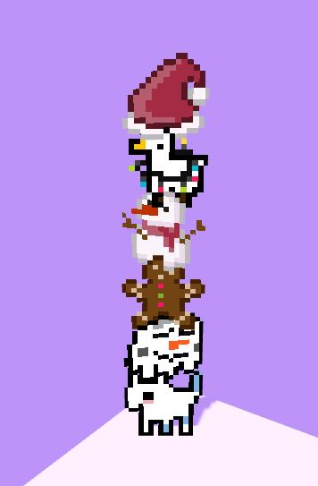
Another thing I'm wishing upon the stars for are conditionals! If... Else... For... While... They're probably a pain in the ass to implement but they'd take this engine far into mindfuck territory with how much the possibility space would open up. Areas could be locked off until a certain condition is met, and NPCs could have different actions based on which conditions do or don't apply.
This is me slipping into feature-brain a bit though so take this section with a pinch of salt, if anything it's the prospect of more that is making me dream, and I'm just glad that Wareware will keep evolving further unlike the numerous tiny tools that get uploaded and abandoned by their creator, never to be added to or updated again (VisunovOS I swear I won't do this to you please you have to believe me).
Dreaming of Places
Fundamentally the itch that walkie-talkies scratch is a specific one, vaguely in the direction of so-called third places. The way you interact with these digital spaces is strikingly human, you walk and you talk, actions which ideally are done multiple times every day. To locomote yourself is to go someplace and exist there, preferably with others, where you can exchange thoughts, ideas, jokes, and experiences. Walkie-talkies work to simulate this to a certain extent by crafting places that are hospitable, which invite your presence through mechanics and dialogue. As the player you are wanted.
It's also kind of like a social anxiety power fantasy.
With the recent world cup it has never been clearer that we're running out of third places, running out of space in general to cheer and celebrate to our hearts content. I'm not big on football, but I am big on letting people enjoy things, and the constraints that are put onto human celebration are asphyxiating. You're given one hour to celebrate your team winning a key match, after which you are expected to disperse back into your homes and out of the public eye. People high on emotion lash out when constricted, pressed and pushed. It doesn't feel right, it doesn't feel okay.
When there's no community center to welcome me and offer me space, no park without NIMBYs to call the cops on me for laughing too loud, no bars or venues to spend a night out without paying for a ticket, I start to dream of a sewer full of dancing and drinking rats, eager to talk with me and welcome me into their midst.
This publication is copyleft
Whatever that means
This publication is a proud part of experimental publishing
Attend a special issue, if you dare
Kill the mind-cop
He's keeping you back
Touch grass
It makes you feel alive
Build tools
To use and share and modify
Make noise
Take up space and exist in the physical world
This text loves you
Take care of yourself
Featured Tools
TOOL by CREATOR
Used Tools
Formatted in PAGED.JS
Select assets made in KRITA
QR codes generated at https://konig.games/QRCodes/
Fonts
ATKINSON HYPERLEGIBLE by the Braille Institute
AMALGAMA from NR74W's WipEout fonts collection
BRICK TEXT LOGO by YutaONE
AXEL BOX by YutaONE
CLASH GROTESK by Indian Type Foundry
Magazines always have a bunch of tiny text at the bottom of some ads and the last page, why is that? Is it just a bunch of legalese or does it actually serve some for-reading purpose? On most scans I can't even make out the words let alone what it's supposed to communicate. Maybe that's the point though, a block of text that fades into its surroundings and becomes invisible to the average reader's naked eye. Anyways I'm gonna try to get some more lines down to fill it out more. I really wish I had the time and mind to write about more tools in here, I've been finding a lot of really cool stuff and it deserves something of a place I think. Maybe also articles that span more than just 2 pages and go into more detail about the actual making process inside of the given tool. Not explaining stuff but more like how it feels to use. I'd definitely need to use them for a project or something for that. Anyways I'm on my last line so here it'll be farewell for realsies. Onto the next issue I hope!